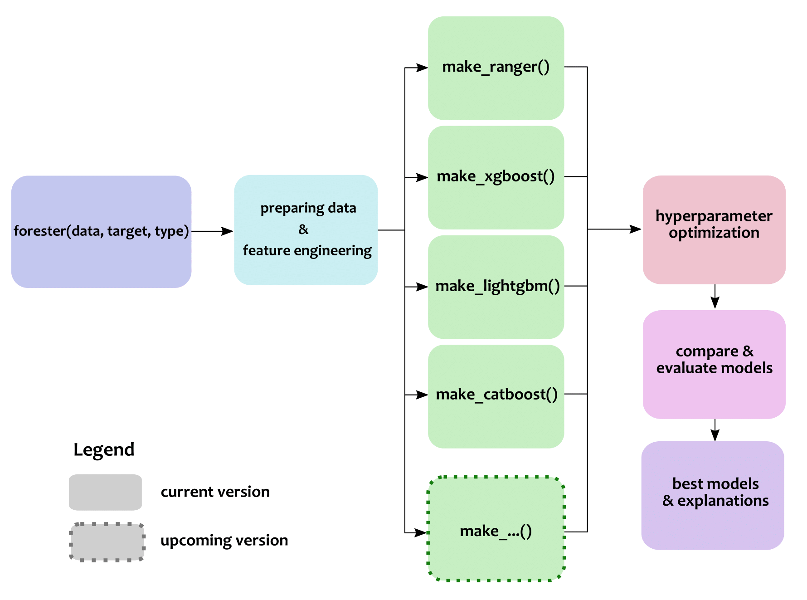

Overview
forester is an R package designed to be intuive, brief in formula, and easy to use. It covers the whole process of creating Machine Learning Models with different known models, such as XGBoost, ranger, LightGBM, CatBoost, etc. in an unified formula which let users to control how core steps work. 
Installation
(From CRAN - not yet available
install.packages("forester")
```)
From GitHub
``` r
install.packages("devtools")
devtools::install_github("ModelOriented/forester")
Usage
Core functions in forester package are:
-
forester(), for automatically creating the whole ML process and returning optimal model.
data("titanic", package = 'DALEX')
best_model <- forester(data = titanic, target = "survived", type = "regression",
metric = "precision", tune = FALSE)
# Print ranking table for models:
print(best_model)
# The best_model object can be used for giving explanation:
modelStudio::modelStudio(best_model)
-
make_...(), for independently creating model with explanations.
data("apartments", package = 'DALEX')
data("apartments_test", package = 'DALEX')
catboost <- make_catboost(apartments, "m2.price", "regression", tune = TRUE,
metric = "rmse")
# prediction:
apartments_test <- apartments_test[ ,!(colnames(apartments_test) %in% "m2.price"]
predict(catboost, apartments_test)
# explanation:
model_performance(catboost)
plot(model_performance(catboost))
modelStudio::modelStudio(catboost) 